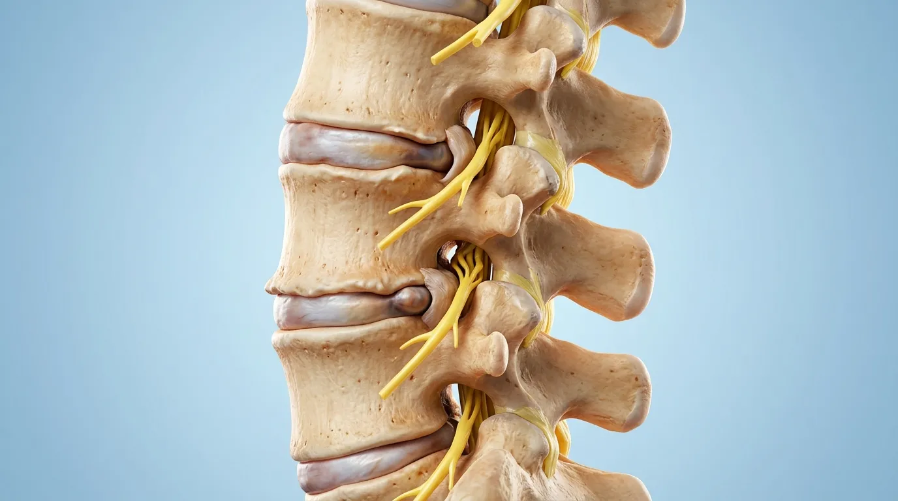
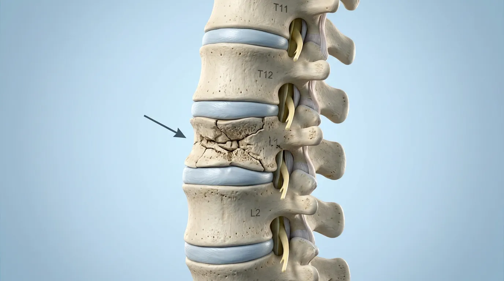
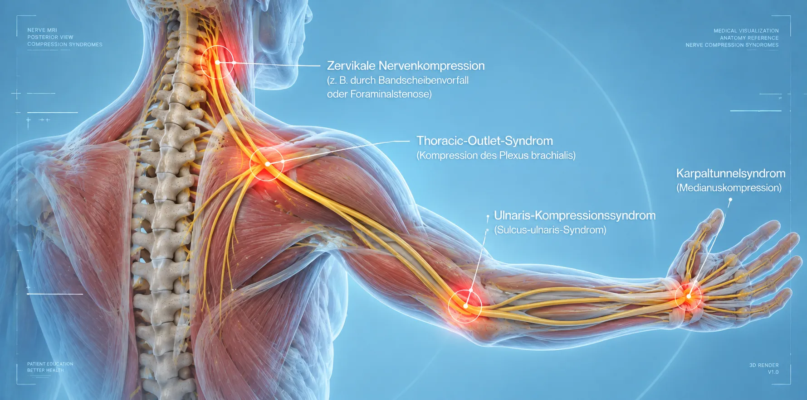
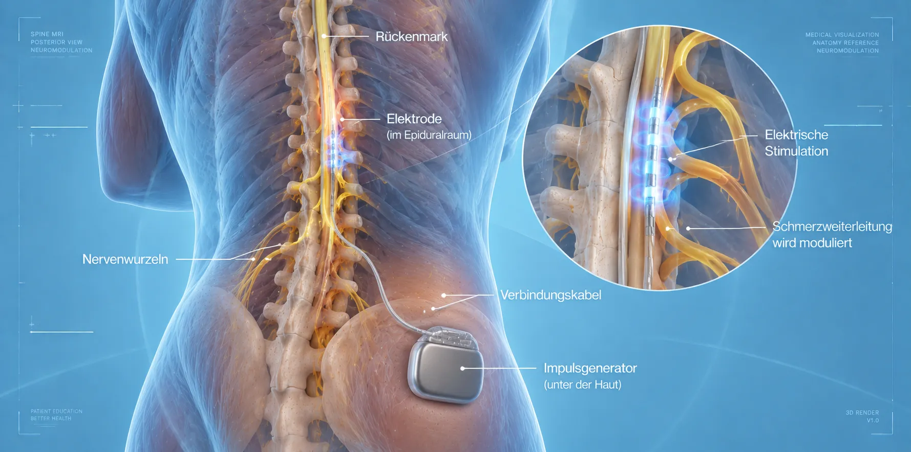
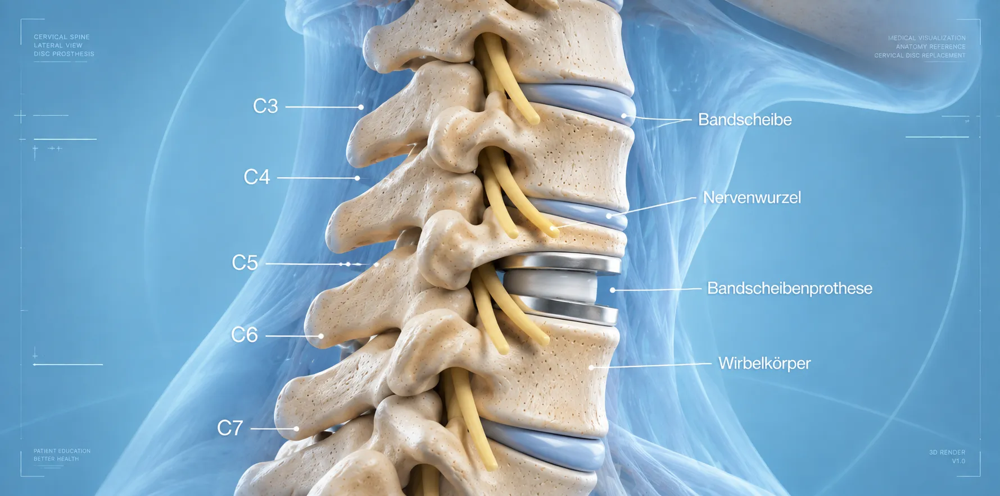

Unsere Behandlungen
Специализированные хирургические и консервативные методы – индивидуально подбираемые для вас.
Важное медицинское примечание
Точное показание и выбор подходящего метода всегда определяются индивидуально врачом. Мы не гарантируем конкретный результат.
Хирургические вмешательства
Микрохирургические, эндоскопические и малоинвазивные операции
Unser Leistungsspektrum umfasst spezialisierte operative Verfahren an der Wirbelsäule und den peripheren Nerven. Jede Operation wird nach ausführlicher Diagnostik individuell auf Ihre medizinische Indikation abgestimmt.
Wir setzen auf minimalinvasive Techniken, die die umliegenden Strukturen schonen und eine schnelle Erholung ermöglichen.
Операция на межпозвоночном диске
Mikrochirurgische oder endoskopische Entfernung von vorgefallenem Bandscheibenmaterial zur Entlastung komprimierter Nervenwurzeln – schonend und präzise.
.webp)
Микрохирургическая декомпрессия & стабилизация
Operative Entlastung eingeengter Nervenstrukturen bei Стеноз спинного канала. Bei Bedarf ergänzt durch minimalinvasive Stabilisierung der Wirbelsäule.

Кифопластика & Стабилизация позвонка
Perkutane minimalinvasive Stabilisierung von Wirbelkörperbrüchen bei Osteoporose oder Tumorbefall. Zementaugmentation zur Schmerzreduktion und Stabilisierung.

Операция на периферических нервах
Ambulante mikrochirurgische Dekompression bei Синдром запястного канала, Sulcus-ulnaris-Syndrom und weiteren Engpasssyndromen der peripheren Nerven.

Нейромодуляция & Spinal Cord Stimulation
Innovative elektrische Stimulation von Nervenbahnen bei chronischen Schmerzsyndromen. Rückenmarkstimulation (SCS) nach sorgfältiger Indikationsprüfung.

Операция на ШОП & Протезирование дисков
Хирургические вмешательства an der Halswirbelsäule: Dekompression, Fusion oder bewegungserhaltender Bandscheibenersatz (Arthroplastie) je nach individuellem Befund.

Перкутанная РЧ термоабляция опухоли
Minimalinvasive Ablation bei Knochentumormetastasen durch gezielte Wärmeenergie. In Abstimmung mit dem betreuenden Onkologen und der interdisziplinären Behandlungsplanung.
Блокады фасеточных суставов & Денервация
Gezielte Infiltration oder Radiofrequenzdenervation der Фасеточные суставы zur Schmerztherapie bei Facettengelenkarthrose und chronischen Rückenschmerzen.
Удаление интраспинальных опухолей
Mikrochirurgische Resektion von Tumoren, Metastasen und Gefäßanomalien im Bereich der Wirbelsäule und des Rückenmarks, inklusive Tethered-Cord-Symptomatik.
Артропластика & Артродез (КПС)
Operative Versorgung des Iliosakralgelenks: Gelenkerhalt oder Versteifung (Arthrodese) bei chronischem Синдром КПС, nach individueller Indikationsprüfung.
Биопсия мышцы
Diagnostische Entnahme von Muskelgewebe zur Abklärung unklarer Nerven- und Muskelerkrankungen (Myopathien, Neuropathien). Ambulant oder stationär möglich.
Нейрохирургическая экспертиза
Professionelle medizinische Gutachten und Zweitmeinungen bei neurochirurgischen Fragestellungen – für Patienten, Versicherungen und Gerichte.